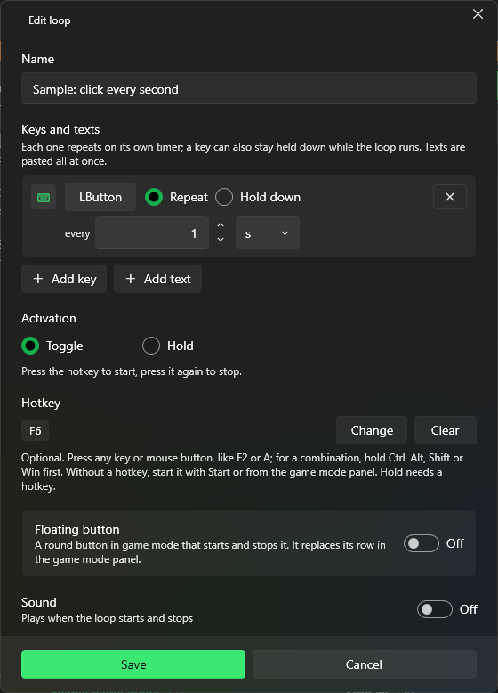

A loop repeats keys or texts until you stop it. Select Add loop on the Loops page.

A loop that presses the left mouse button every second, started and stopped with F6.
Keys and texts: each row repeats on its own timer, from 10 ms to 24 h.
Add key, then press any key or mouse button (to change it later, select the key's button). Choose Repeat every N ms, s, min or h, or Hold down to keep it held while the loop runs.
Add text: the text is pasted all at once, optionally with Press Enter before pasting and Press Enter after pasting. Your clipboard is restored afterwards.
Activation: Toggle (press the hotkey to start, press it again to stop) or Hold (runs only while the hotkey is held down).
Hotkey: optional. Select Change and press a key or mouse button; for a combination, hold Ctrl, Alt, Shift or Win first. Without a hotkey, start the loop with Start or from the game mode panel. Hold needs a hotkey.
Floating button: a round button in game mode that starts and stops the loop, placed anywhere on the screen (see Game mode).
Sound: plays when the loop starts and stops.
On the Loops page, the switch on each loop enables or disables it, and the … menu has Edit, Move up, Move down and Delete. You can also drag loops to reorder them. Search and Filter by (All, Enabled, Disabled, Running) help with long lists.